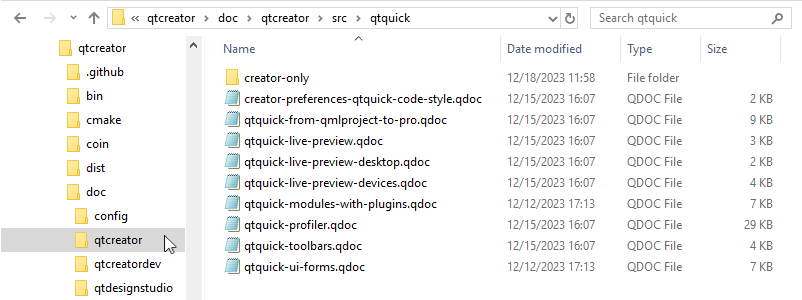

Writing Documentation
When you add plugins or contribute new features to Qt Creator, you probably want other people to know about them and to be able to use them. Therefore, you should also contribute their documentation. Follow the guidelines in this section to make sure that your documentation fits in well with the rest of the Qt Creator documentation.
When you contribute a plugin, you should write documentation both for the developers who use Qt Creator and for those who develop it.
Add the following types of topics to the Qt Creator Manual or as a separate plugin manual if your plugin is located in a repository of its own:
- Overview topics, which describe the purpose of your plugin from the viewpoint of Qt Creator users.
- Tutorials, which describe how to create different types of Qt applications.
- How-to topics, which describe how to perform tasks with your plugin as part of Qt Creator.
- Reference topics, which contain information that developers occasionally need to look up.
Add the following types of topics to the Extending Qt Creator Manual:
- Overview topic, which describes the architecture and use cases for your plugin from the viewpoint of Qt Creator developers.
- API documentation, which is generated from code comments.
Configuring Documentation Projects
Use QDoc to write Qt Creator documentation. For more information about using QDoc, see the QDoc Manual.
QDoc finds the new topics automatically, when you place them as .qdoc files in a doc source folder. However, to make the topics accessible to readers, you must also add them to the table of contents, use the \ingroup command to automatically add them to lists of topics, or use the \l (link) and \sa (see also) commands to add links to them from other topics.
Creating Folders and Files
The qtcreator repository contains the sources for building the following documents:
- Qt Creator Manual
- Extending Qt Creator Manual
- Qt Design Studio Manual
The sources for each project are in the following subfolders of the Qt Creator project folder:
\doc\qtcreator\src\doc\qtcreatordev\src\doc\qtdesignstudio\src
The Qt Creator Manual and the Qt Design Studio Manual share some topics about developing Qt Quick applications, writing and debugging code, previewing QML files, and so on.
The Extending Qt Creator Manual has its own sources. In addition, it pulls in API reference documentation from the Qt Creator source files. Add code documentation directly to the code source files. However, you can write an API overview also as a separate .qdoc file.
Create a subfolder for your documentation in the appropriate src folder. Create a separate file for each topic.

The easiest way is probably to copy an existing file, save it as a new file, and modify it. This way, you already have samples of the necessary bits and pieces in place, such as topic start and end commands, copyright statement, topic command (usually \page), navigation links, grouping, and topic title.
Integrating Topics to Documentation
You must integrate your new topics to the manuals by adding links to them from the table of contents and from other relevant topics. In addition, use the \previouspage and \nextpage commands to add navigation links between topics.
To link to the topic, you can use the topic title. For example:
\l {Integrating Topics to Documentation}
\sa {Integrating Topics to Documentation}
\previouspage {Integrating Topics to Documentation}
This only works if topic titles are unique. Also, if you change the title, the link breaks. You can avoid this risk by adding the \target command to your topic and then linking to the target.
Showing and Hiding Information
Qt Design Studio uses only a subset of Qt Creator plugins and it has its own special plugins. Their manuals have different structure and content, so only some source files are needed in both manuals. All files from \doc\qtdesignstudio\ are excluded from the Qt Creator Manual builds.
If QDoc parsed all the Qt Creator Manual sources when you build the Qt Design Studio Manual, it would generate HTML files for each topic and include those files and all the images that they refer to in the Qt Design Studio help compilation files. This would unnecessarily increase the size of the Qt Design Studio help database and pollute the help index with references to files that are not actually listed in the table of contents of the Qt Design Studio Manual. To avoid this, some files are excluded from the Qt Design Studio Manual builds.
Excluding Source Files from Qt Design Studio Manual Builds
The folders to exclude from Qt Design Studio Manual builds are listed as values of the excludedirs option in \doc\qtdesignstudio\config\qtdesignstudio.qdocconf.
You only need to edit the values of the option if you want to show or hide all the contents of a folder. For example, if you add support for a Qt Creator plugin that was previously not supported by Qt Design Studio, you should remove the folder that contains the documentation for the plugin from the values.
To hide or show individual topics within individual .qdoc files, you need to move the files in the Qt Creator Manual source (\doc\qtcreator\src) to or from the excluded folders.
For example, if support for iOS were added, you would need to check whether the information about iOS support is applicable to Qt Design Studio Manual. If yes, you would need to remove the following line from the excludedirs value:
../../src/ios \
You would then use defines to hide any Qt Creator specific information from the source file in the folder.
If a folder contains some files that are needed in both manuals and some that are only needed in the Qt Creator Manual, the latter are located in a subfolder called creator-only, which is excluded from the Qt Design Studio Manual builds.
If you add a new folder in \doc\qtcreator\src that you don't need in the Qt Design Studio Manual, add the folder path and name as a value of excludedirs.
Hiding Text from HTML Files
The qtcreator define is specified as a value of the defines variable in the Qt Creator QDoc configuration file, \doc\qtcreator\config\qtcreator-project.qdocconf. Use it as a value of the \if command in the Qt Creator Manual sources to hide Qt Creator specific information from the generated HTML files when you build the Qt Design Studio Manual.
The qtdesignstudio define is specified as a value of the defines variable in the Qt Design Studio Manual configuration file, qtcreator\doc\qtdesignstudio\config\qtdesignstudio.qdocconf. Use it with the \if command in the Qt Creator Manual sources to hide Qt Design Studio specific information from the generated HTML when you build the Qt Creator Manual.
You can use the \else command to display different text depending on which manual is built.
End the conditional text with the \endif command.
For example, the terminology around the code editor is different in Qt Creator and Qt Design Studio, so different text is shown depending on which manual is built:
\li \l{Writing Code}
\if defined(qtdesignstudio)
The \l{Code} view offers services, such as semantic highlighting,
syntax checking, code completion, code indentation, and in-line
error indicators while you are typing.
\else
Writing, editing, and navigating in source code are core tasks in
application development. Therefore, the code editor is one of the
key components of \QC. You can use the code editor in the
\uicontrol Edit mode.
\endif
Note: Section titles in the two manuals can be identical only if the page is excluded from the Qt Design Studio Manual. In this case, QDoc can correctly determine the link target. If you add a link to a section title that appears twice in the doc source files, QDoc uses the first reference to that title in the .index file.
Writing About Qt Design Studio Specific Features
Qt Design Studio specific plugins and features are described in a set of doc source files located in the \doc\qtdesignstudio\src folder.
Save screenshots and other illustrations in \qtdesignstudio\images.
If you add new topics to the Qt Design Studio Manual, add links to them to the table of contents in qtdesignstudio-toc.qdoc.
Updating Next and Previous Links
QDoc automatically generates links to the previous and next page in each manual based on the list in a topic with the title All Topics, which is in the following files:
- Qt Creator:
\qtcreator\doc\qtcreator\src\qtcreator-toc.qdoc - Qt Design Studio:
\qtcreator\doc\qtdesignstudio\src\qtdesignstudio-toc.qdoc
The title of the topic to use for automatically generating the navigation links is set as the value of the navigation.toctitles option in the document configuration file:
- Qt Creator:
\doc\qtcreator\config\qtcreator-project.qdocconf - Qt Design Studio:
\doc\qtdesignstudio\config\qtdesignstudio.qdocconf
When you add new topics, you must add them either to the TOC or to a group of topics (\ingroup) that is used to generate a list in the TOC (\generatelist).
In the Qt Creator Manual, you can see the current groups in the How To and Reference sections of the TOC. You can add new groups.
Note: You do not need to manually change the navigation links, but they must be there with some initial values for QDoc to replace with the values from the TOC when you build the docs.
Adding Documentation for Independent Plugins
You can develop Qt Creator plugins in separate repositories. Such plugins should have their own help files (.qch) that are installed and registered only if the plugin is installed.
The easiest way to set up the documentation project for an independent plugin is to copy it from an existing repository, and then make the necessary changes.
Use the following naming scheme for Qt Creator plugin manuals: Qt Creator <Plugin Name> Plugin Manual.
Writing Text
Follow the guidelines for writing Qt documentation.
The documentation must be grammatically correct English and use the standard form of written language. Do not use dialect or slang words. Use idiomatic language, that is, expressions that are characteristic for English. If possible, ask a native English speaker for a review.
Capitalizing Headings
Use the book title capitalization style for all titles and section headings (\title, \section1, \section2, and so on). For more information, see Using Book Style Capitalization.
Using Images
You can illustrate documentation by using screen shots, diagrams, and animated images, for example.
Follow the guidelines set in QUIP 21 | Using images in Qt documentation.
The following sections contain some Qt Creator and Qt Design Studio specific guidelines and examples.
Icons
The Qt Documentation published online can be viewed in dark and light modes. To make the icons used in the docs visible in both modes, save icon files as gray-scale images with a transparent background in the following locations, depending on whether they are used in both manuals or just the Qt Design Studio Manual:
qtcreator/doc/qtcreator/images/icons- used in the Qt Creator Manual.qtcreator/doc/qtdesignstudio/images/icons- used only in the Qt Design Studio Manual.
You can use a script located in qttools/util/recolordocsicons/ to recolor icons.
Saving Images
Save images in PNG or WebP format in the Qt Creator project folder in the doc/qtcreator/images or doc/qtdesignstudio/images folder or their subfolders.
Before committing PNG images, optimize them by using an image optimization tool, such as OptiPNG. To invoke it from the Qt Creator project enter the following command:
optipng -o 7 -strip all doc/images/<screenshot_name>
Linking to Youtube Videos
You can use the \youtube macro to link to a video on Youtube. The HTML docs show a thumbnail of the video with a play button.
The support for the macro is defined in the qtcreator\doc\config\macros.qdocconf and qtcreator\doc\config\macros-online.qdocconf files. To use the macro, you need to save a thumbnail of the video in qtcreator\doc\qtcreator\images\extraimages\images.
You must add the filename of the thumbnail file to qtcreator-extraimages.qdocconf and qtdesignstudio-extraimages.qdocconf files in the \qtcreator\doc\qtcreator\images\extraimages folder.
If you'll only link to the video from the Qt Creator Manual or the Qt Design Studio Manual, you'll only need to add the thumbnail filename to the extraimages.qdocconf file for that project.
Building Documentation
You use QDoc to build the documentation. Build the documentation before submitting any documentation patches, to check its structure, contents, and the validity of the QDoc commands. The error messages that QDoc issues are generally very useful for troubleshooting.
Setting Up Documentation Builds
You can use an installed Qt version to build the documentation. The content and formatting of documentation are separated in QDoc. The documentation configuration, style sheets, and templates have changed over time, so they differ between Qt and Qt Creator versions.
The templates to use are defined by the qt5/qtbase/doc/global/qt-html-templates-offline.qdocconf and qt5/qtbase/doc/global/qt-html-templates-online.qdocconf configuration file. They are fetched from Qt sources by adding the following lines to the qdocconf file:
include ($QT_INSTALL_DOCS/global/qt-html-templates-offline.qdocconf)for help files.include ($QT_INSTALL_DOCS/global/qt-html-templates-online.qdocconf)for publishing on the web.
Note: If the styles look wrong to you when reading help files in Qt Creator or Qt Assistant, you might be using the QTextBrowser as the help engine backend instead of litehtml. For more information, see Select help viewer backend.
To build documentation for the sources from the qtcreator master branch, use build scripts defined in the doc.pri file. You can build the docs using either the offline or online style. The offline style is used for generating HTML files included in help files (.qch), whereas the online style is used at doc.qt.io.
Using CMake
When using CMake, the docs are built in the Qt Creator build folder or a separate doc build folder, not in the project folder.
To get the correct product name and version when building Qt Design Studio Manual, you must run CMake with the branding option. The branding data is located in the Qt Design Studio (private) repository, tqtc-plugin-qtquickdesigner.
To build docs with CMake in a separate doc build folder:
- Create a folder for the built docs and switch to it. For example,
C:\dev\qtc-doc-build. - In the doc build folder, enter the following command:
cmake -DWITH_DOCS=ON "-DCMAKE_PREFIX_PATH=<path_to_qt>" <path_to_qtcreator_src>
For example (all on one line):
C:\dev\qtc-doc-build>cmake -DWITH_DOCS=ON "-DCMAKE_PREFIX_PATH=C:\Qt\6.4.0\msvc2019_64" C:\dev\qtc-super\qtcreator - To also build Extending Qt Creator Manual, add the following option:
-DBUILD_DEVELOPER_DOCS=ON - To also build the Qt Design Studio Manual, add the following option:
"-DCMAKE_MODULE_PATH=<absolute_path_to_qtquickdesignerrepo>/studiodata/branding/"For example:
C:\dev\qtc-doc-build>cmake -DWITH_DOCS=ON -DBUILD_DEVELOPER_DOCS=ON "-DCMAKE_MODULE_PATH=C:\dev\tqtc-plugin-qtquickdesigner\studiodata\branding" "-DCMAKE_PREFIX_PATH=C:\Qt\6.4.0\msvc2019_64" C:\dev\qtc-super\qtcreator - To build the docs using the online style, use the following option instead of
-DWITH_DOCS=ON:-DWITH_ONLINE_DOCS=ONFor example:
C:\dev\qtc-doc-build>cmake -DWITH_ONLINE_DOCS=ON -DBUILD_DEVELOPER_DOCS=ON "-DCMAKE_MODULE_PATH=C:\dev\tqtc-plugin-qtquickdesigner\studiodata\branding" "-DCMAKE_PREFIX_PATH=C:\Qt\6.4.0\msvc2019_64" C:\dev\qtc-super\qtcreatorNote: If you already ran CMake
-DWITH_DOCS=ONin a folder and want to switch to only online docs in that folder, you need to turn the offline docs off again:cmake -DWITH_DOCS=OFF -DWITH_ONLINE_DOCS=ON
- Enter the following doc build command to build both HTML docs and the help files (.qch):
cmake --build . --target docs
- Alternatively, to build only the HTML docs, enter:
cmake --build . --target html_docs
Note: You can enter cmake-gui to open the graphical CMake configuration tool, where you can select build options.
The HTML files for the documentation are generated in the following folders:
doc/html/qtcreatordoc/html/qtcreator-devdoc/html/qtdesignstudiodoc/html/qtcreator-onlinedoc/html/qtcreator-dev-onlinedoc/html/qtdesignstudio-online
The help files (.qch) are generated in the share/doc/qtcreator folder or in the <application_name>.app/Contents/Resources/doc\ folder on macOS.
You can view the HTML files in a browser and the help files in the Qt Creator Help mode. For more information about adding the help files to Qt Creator, see Add external documentation.
Additional Build Commands
Besides docs and html_docs, you can use the following build targets:
html_docs_<doc_config_file_name>- build the document (qtcreator/ qtcreator-dev/qtdesignstudio) in help format, but do not generate a help file (.qch).html_docs_<doc_config_file_name>-online- build the document (qtcreator/qtcreator-dev/qtdesignstudio) in online format.qch_docs_<doc_config_file_name>- build the document (qtcreator/ qtcreator-dev/qtdesignstudio) in help format and generate a help file.